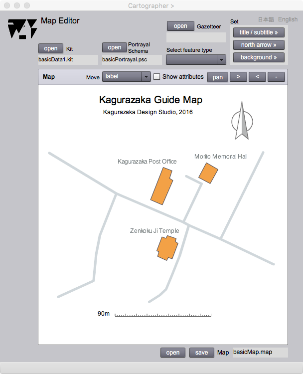

Map Editor
Introduction
The map obeying the portrayal schema can be displayed on this page. Title, subtitle, label, scale-bar, north arrow, and legend can be moved for the layout of the map. Background color also can be selected.
The map that has a capability to show attributes by clicking symbol is called an interactive map. Map Editor provides the function to show information pages in accordance with the media of attributes.
Map Editor can store a map in the computer as a persistent data file.
Map Editor

Figure 1. Map Editor page
FIELDS
Kit
The kit file name is displayed on this field after opening of the kit by the open button.
Portrayal and draw the map
The portrayal schema file name is displayed after opening of the portrayal schema by the one button.
Gazetteer
The gazetteer file name is displayed after opening of the gazetteer by the open button.
Mapping Panel (editable)
The map is automatically displayed after opening of the portrayal schema.
Move (editable)
Elements of a map without geometry can be translate by the selection of the theme on this drop down list. Each element can be moved by dragging a cursor on the map. In case of labels, place a cursor on the label before dragging.
Map
The map data file name is displayed after opening or closing of the map data by the open/save button.
BUTTONS
open (Kit)
The kit file is opened by clicking this button.
open (Portrayal Schema)
The portrayal schema is opened and the map obeying the schema is displayed by clicking this button.
open (Gazetteer)
The gazetteer is opened by clicking this button.
title/subtitle
The title and subtitle can be set on Title Editor by clicking this button
north arrow
The north arrow can be set on North Arrow Selector by clicking this button.
background
Th background color can be set on Color selector by clicking this button.
open (Map)
The map data is opened by clicking this button.
save (Map)
The map data is saved by clicking this button.
View attributes
The feature attribute of a symbol (point, line or area) drawn on the map is displayed on the corresponding information page by checking this check box.
>
The map scale becomes smaller by clicking this button.
<
The map scale becomes larger by clicking this button.
-
The map scale is initialized by clicking this button.
on/off
The dragging of a map becomes possible by clicking the 'off' button, and becomes impossible by clicking 'on'.
日本語
今あなたが読んでいるドキュメントが表示されます．
English
You can read the tutorial written in English.